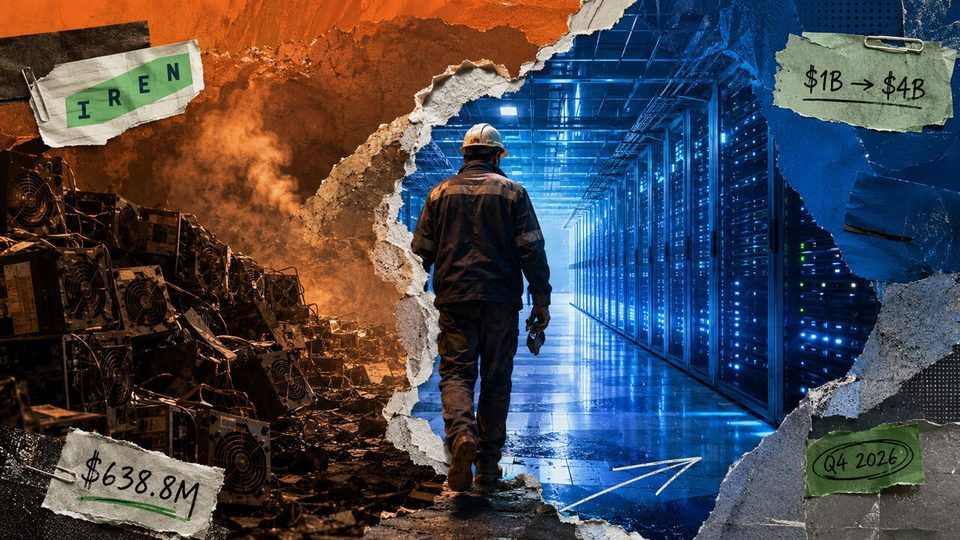
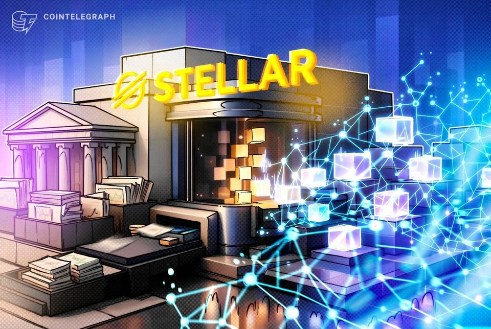
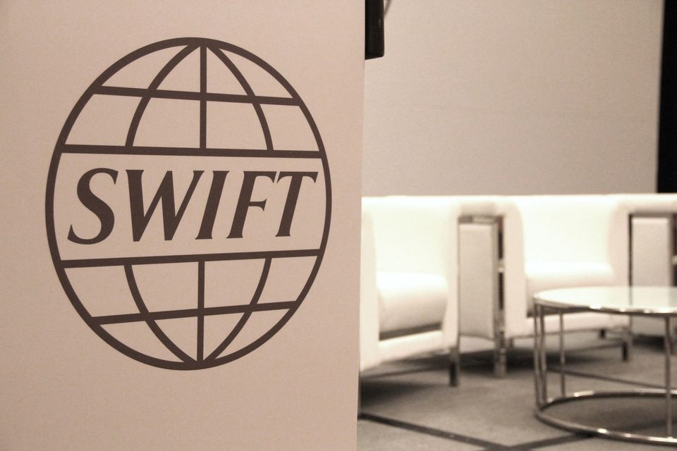

August 30, 2026
Daily headline set with source diversity, cleaned links, and local static rendering.

A $1.1 million crypto card hack crashed a neobank's token 49%
A $1.1 million crypto card hack crashed a neobank's token 49%
Deribit moved 90% of client assets to Coinbase, then killed its daily proof-of-reserves check
The Sept. 1 change removes a client Merkle check, leaving VARA reports and audited materials that are less public. The post Deribit moved 90% of client assets to Coinbase, then killed its daily proof-of-reserves check...
Polygon discloses security flaws fixed in recent hard forks
The vulnerabilities posed denial-of-service and validator resource risks but were patched before Polygon publicly disclosed them.

Bernie Sanders Vows Legislation to 'Stop Flock and AI Mass Surveillance'
The Vermont senator warned that the surveillance company's 120,000-plus AI cameras are pushing the US toward a "surveillance state," adding a prominent voice to a growing bipartisan backlash.

Ditching 'digital gold': BPI study suggests everyday Americans prefer control and micro-investing
Ditching 'digital gold': BPI study suggests everyday Americans prefer control and micro-investing

Bitcoin miner IREN still gets 82% of revenue from BTC after clearing room for Microsoft AI cloud
The company’s $4 billion contracted AI run-rate target was four times the $1 billion operating level measured Aug. 26, with recognition still gated by delivery and customer acceptance. The post Bitcoin miner IREN still...

Stellar tokenized RWA market more than quadruples to nearly $4B
Stellar’s real-world asset market has expanded rapidly this year as institutional adoption and tokenization activity grow across the network.

Bitcoin's Oldest Coins Are Waking Up in 2026 at a Pace Rarely Seen
Galaxy Research shows coins untouched for 10-plus years moving at an unusual pace in 2026, with six ancient wallets shifting $40 million in a single 10-day stretch this month.

Inside the high-stakes battle between digital dollars and Swift's massive money engine
Inside the high-stakes battle between digital dollars and Swift's massive money engine
Coinbase's $104M US500 trading spike hits an early reality check
Armstrong’s launch-week chart captured $104 million in turnover, while one later snapshot left persistence to open interest and repeat sessions. The post Coinbase’s $104M US500 trading spike hits an early reality check...
Tokenized stock transfer volume jumps 415% in 30 days to $29.5B
Tokenized equities saw a sharp rise in onchain activity as active addresses and holders more than doubled over the past month.
BitGo Buys NYDIG's Institutional Trading Arm to Beef Up Derivatives and Financing
The roughly $42.5 million cash-and-stock deal adds derivatives, structured products and capital-markets capabilities, while letting NYDIG focus on its power and data-center business.